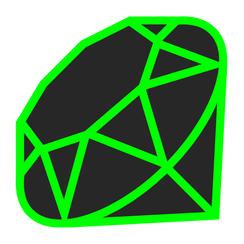

Domine as principais tecnologias para automação, infraestrutura e gerenciamento de sistemas.
SQL
Gerencie e consulte bancos de dados para armazenar e recuperar informações com eficiência.
Iniciar
JavaScript
Automatize tarefas, manipule APIs e crie ferramentas de suporte ao DevOps.
Iniciar
Node.js
Implemente automação e servidores eficientes usando JavaScript no back-end.
Iniciar
Python
Automatize processos, desenvolva scripts e gerencie infraestrutura com Ansible e Terraform.
Iniciar

Go
Desenvolva ferramentas escaláveis e eficientes para sistemas distribuídos e cloud-native.
Iniciar

Ruby
Crie scripts de automação e configure infraestrutura com Chef.
Iniciar
C
Base de sistemas operacionais, servidores e ferramentas essenciais para DevOps.
Iniciar
C++
Utilizado em sistemas de alto desempenho, redes e engenharia de software crítica.
Iniciar
Java
Amplamente usado em aplicações corporativas, servidores e microsserviços.
Iniciar
TypeScript
Crie aplicações seguras e escaláveis, reduzindo erros no desenvolvimento.
Iniciar

Kotlin
Usado no desenvolvimento de microsserviços e aplicações server-side com Ktor.
Iniciar
Git e GitHub
Gerencie versões de código, colabore e integre pipelines CI/CD.
Iniciar